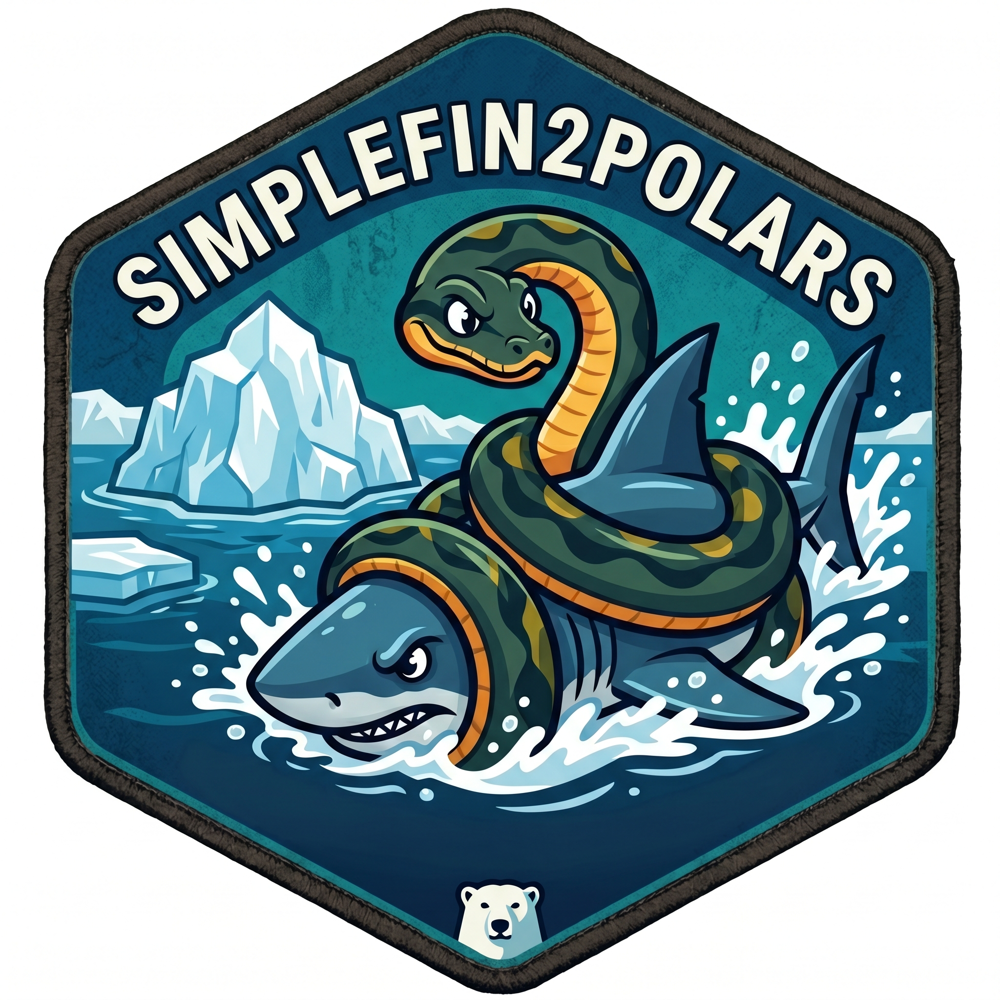

simplefin2polars
Query the SimpleFIN protocol and parse responses into Polars DataFrames.
Installation
pip install simplefin2polarsOr, for development:
pip install -e ".[dev]"Overview
SimpleFIN gives read-only programmatic access to your bank account balances and transactions. Three steps are needed on first use:
- Get a token — visit the SimpleFIN Bridge and follow the prompts.
- Claim it — exchange the one-time token for a persistent Access URL.
- Store it — save the Access URL to your OS credential store.
After that, every subsequent query is a single function call.
from simplefin2polars import (
sfin_claim_token,
sfin_set_access_url,
sfin_accounts,
sfin_transactions,
)
# --- One-time setup ----------------------------------------------------------
token = input("Paste your SimpleFIN token: ")
access_url = sfin_claim_token(token)
sfin_set_access_url(access_url, key="personal")
# --- Query -------------------------------------------------------------------
# Account balances only
result = sfin_accounts(key="personal", balances_only=True)
print(result["accounts"])
# Transactions for the last 90 days
from datetime import date, timedelta
txns = sfin_transactions(
key="personal",
start_date=date.today() - timedelta(days=90),
join_accounts=True, # adds account_name, currency, etc.
)Functions
Authentication
| Function | Description |
|---|---|
sfin_claim_token(token) |
Exchange a Base64-encoded SimpleFIN Token for a persistent Access URL |
Credential store (requires keyring)
| Function | Description |
|---|---|
sfin_set_access_url(access_url, key) |
Save an Access URL to the OS credential store |
sfin_get_access_url(key) |
Retrieve a stored Access URL |
sfin_delete_access_url(key) |
Remove a stored Access URL |
sfin_list_keys() |
List all stored key names (backend-dependent) |
The key argument (default "default") lets you manage multiple accounts, e.g. key="personal" and key="business". Keys are stored under the same service name as simplefinr ("simplefinr"), so credentials set in R are readable in Python and vice versa.
Querying
| Function | Description |
|---|---|
sfin_accounts(...) |
Full response as a dict of four DataFrames |
sfin_transactions(...) |
Transactions DataFrame, optionally joined with account metadata |
Both functions accept either access_url (a literal URL string) or key (a keyring key name) — not both.
Common parameters:
| Parameter | Description |
|---|---|
start_date |
Transactions on or after this date (datetime, date, or UNIX timestamp) |
end_date |
Transactions before this date (exclusive) |
pending |
Include pending transactions; default False |
account |
String or list of account IDs to filter to |
balances_only |
Skip transaction data and return balances only |
Return value of sfin_accounts()
A dict with four Polars DataFrames:
| Key | Grain | Key columns |
|---|---|---|
"accounts" |
one row per account | account_id, balance, balance_date, currency |
"transactions" |
one row per transaction | account_id, amount, posted, description, pending |
"connections" |
one row per institution connection | conn_id, name, org_url |
"errors" |
one row per server-reported error | code, msg, conn_id |
Timestamps (balance_date, posted, transacted_at) are Datetime("us", "UTC"). Balance and amount fields are Float64 (the API returns them as strings).
Example workflow
from simplefin2polars import sfin_accounts
import polars as pl
from datetime import date, timedelta
result = sfin_accounts(key="personal", start_date=date.today() - timedelta(days=30))
# Check for any connection-level errors
print(result["errors"])
# Summarise spending by account
(
result["transactions"]
.filter(pl.col("amount") < 0)
.join(
result["accounts"].select(["account_id", "account_name"]),
on="account_id",
how="left",
)
.group_by("account_name")
.agg(pl.col("amount").sum().alias("total_spent"))
)Security notes
- Access URLs contain embedded credentials. Treat them like passwords.
sfin_set_access_url()stores them in the OS credential store (macOS Keychain, Windows Credential Store, or the Secret Service on Linux) via thekeyringpackage, which is safer than environment variables or.envfiles.- If you choose not to use
keyring, the Access URL can be passed directly asaccess_url=os.environ["SIMPLEFIN_ACCESS_URL"]. - simplefin2polars only ever makes
GETrequests after the initial claim — the SimpleFIN protocol is strictly read-only.
Running tests
pytestCredits
MIT © 2026 Daniel Riggins.
Made in collaboration with Posit’s Positron AI assistant.
Hex badge designed in collaboration with Gemini (Google AI).